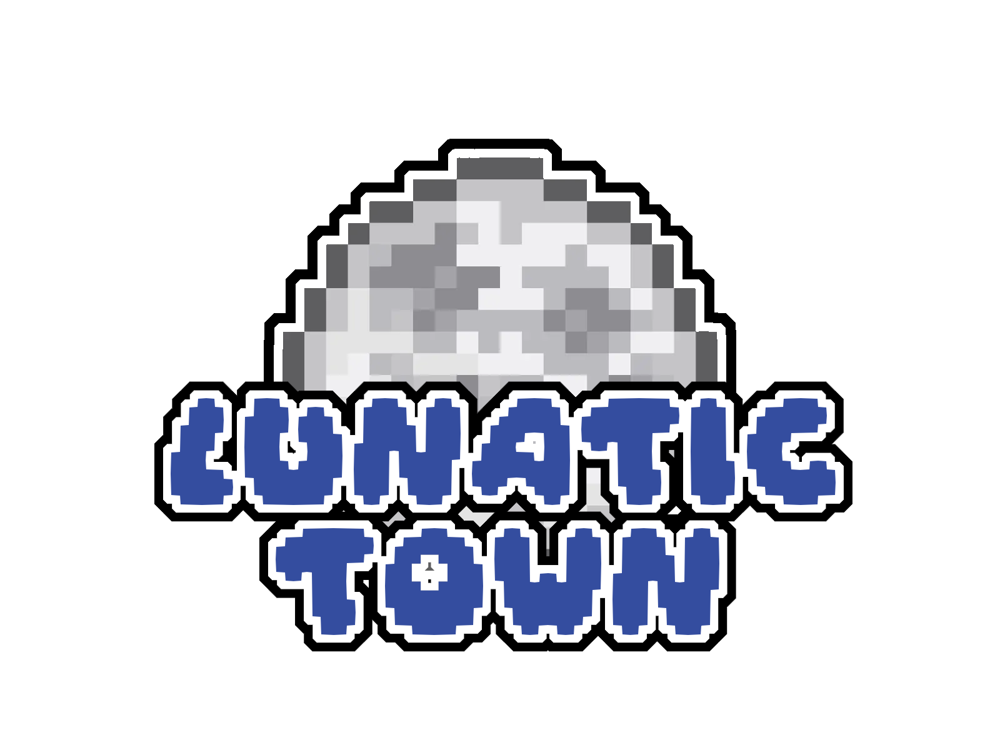
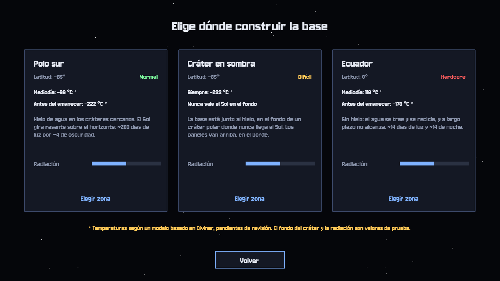
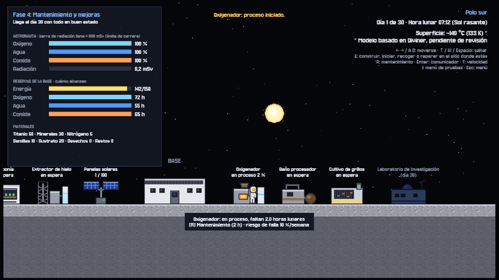
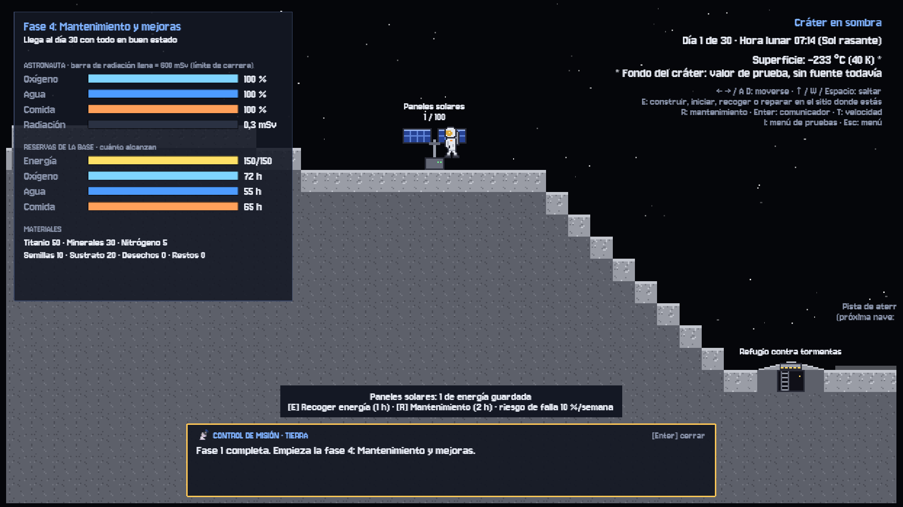
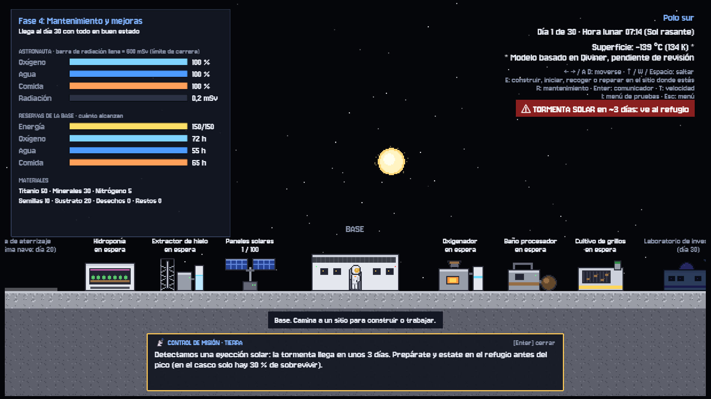
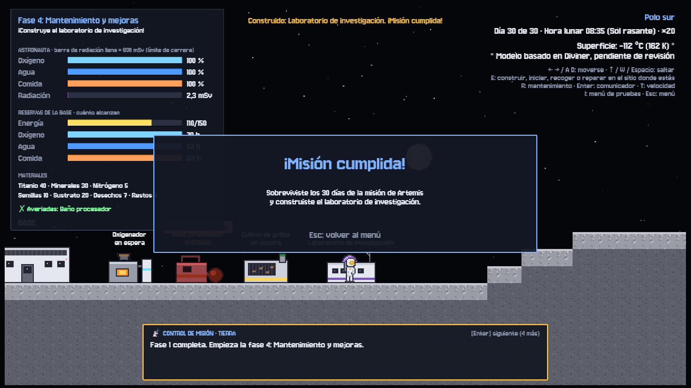

Each zone changes sunlight, temperature and the water you can get.

Nothing is automatic: walk to each station, do the work, collect what it makes.

In the crater you must climb to the sunlit rim to collect solar power.

Mission Control warns you by radio. You decide how to prepare.
